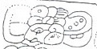
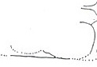
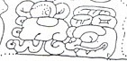
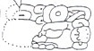
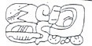
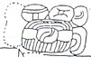
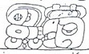

| D1 |  | ??? ti-b'ah-ha "he goes" |
| C2 |  | [eroded] |
| D2 |  | Yich'aak K'ak' K'uhul Kan Ahaw "Yich'aak K'ak', Holy Lord of Calakmul" |
| E1 |  | ???? Nuun Ujol Chaak |
| F1 |  | B'alah Chan K'awiil |
| E2 |  | [K'uhul] Mutul Ahaw-wa "Holy Lord of Mutul" |
| F2 |  | u-ti-ya Yax-ha "it happened at Yaxha" |